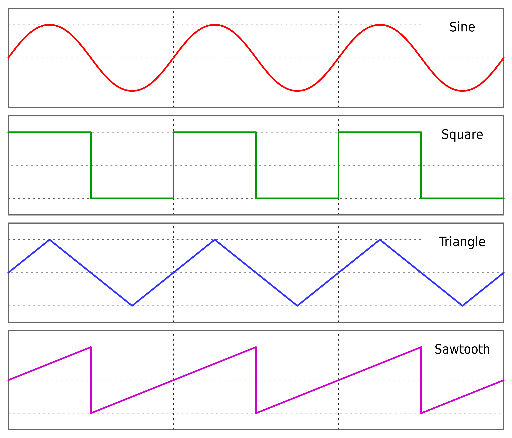

|
|

|
Reciprocrator |
OverviewA reciprocator is used to produce a wave pattern along the object.

Image courtesy Omegatron - Own work, CC BY-SA 3.0, https://commons.wikimedia.org/w/index.php?curid=343520 Typically, this is a sinusoidal pattern along the side of a cylinder or taper (i.e., the Z axis). Such a movement is expected based on the design of the mechanical devices involved. The MDF rose engine lathe's control system has implemented square, triangle, and sawtooth waveforms (sinusoidal is still in development). 
Radial Reciprocation of Square Wave on an Object's End Additionally, the MDF rose engine lathe's control system has implemented the ability to cut these axially (along the Z axis) and radially (around the perimeter of the cylinder). The radial pattern also opens up a lot of options when applied to the end of an object. | ||||||
Examples of work produced with this deviceThese pictures of completed pieces were provided by the Plumier Foundation, and are excellent examples of work by David & Christian Lindow. (Thanks due especially to Becky Lindow for the excellent photography.) You can click on any of the pictures to a larger version of the picture.
More examples of both work in progress and completed works are at this link. | ||||||
Examples of this device in use
| ||||||
How it worksThe headstock is locked in place and does not rock or pump. Instead, the movement consists of these two activities:
Key note: the movement of the spindle is driven by the rotation of the leadscrew used for linear movement of the cutter. This is the opposite of other activities like threading where the spindle drives the leadscrew. David Lindow gave a great presentation on how this device works for The Society of Ornamental Turners in February, 2022. The video of that presentation is available at that group's web site. You will probably need to be a member to get access to the video, but joining the SOT is great idea anyway. | ||||||
More InformationPublished Articles
Web Sites
Presentations
Books
|